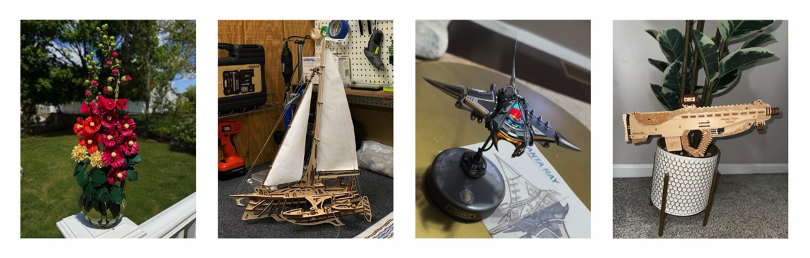
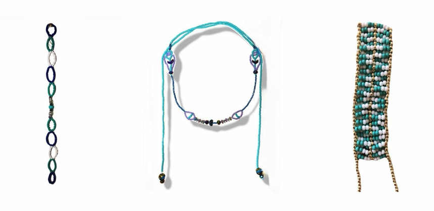
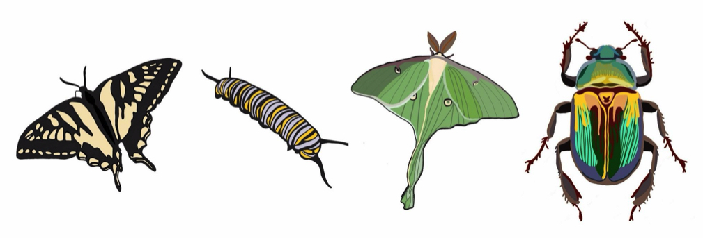
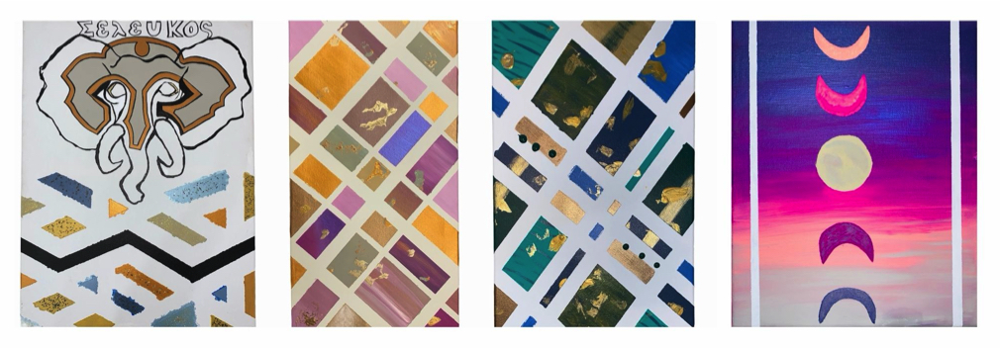

About Me
Hands-On Projects
Outside of work, I’m constantly creating something. I enjoy building hands-on projects ranging from sewing and tufting small rugs to jewelry making and lapidary work, where I cut, shape, and polish stones into finished pieces.
Curiosity & Problem Solving
I love anything that challenges my brain creatively. Whether it’s tackling elaborate mechanical puzzles, experimenting with new ideas, or learning emerging technology, I genuinely enjoy figuring out how things work.
Recently, I completed two mechanical puzzles and two wooden puzzles in a single weekend—which honestly says a lot about me. I enjoy building hands-on projects ranging from sewing and tufting small rugs to jewelry making and lapidary work, where I cut, shape, and polish stones into finished pieces. I’ve always been drawn to creative work that requires both patience and problem-solving
Creative Writing
Writing has always been one of my favorite creative outlets. I enjoy writing children’s books, poetry, meaningful articles for my career, and lately I’ve become fascinated with AI prompt engineering and creative workflows involving artificial intelligence. I enjoy exploring the intersection between creativity, communication, and technology.
Photography & Exploration
Photography and rock hunting are two hobbies that naturally slow me down and make me pay attention to detail. I enjoy exploring, discovering interesting textures and landscapes, and finding beauty in things most people would probably walk right past.



